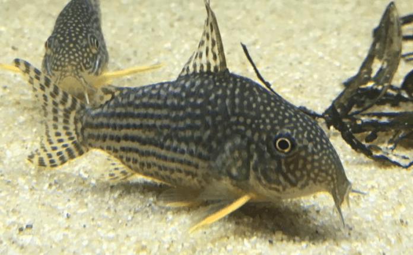
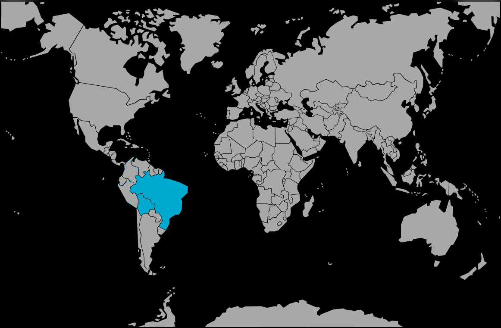

Systématique
- Ordre : Siluriformes
- Famille : Callichthyidae
- Genre : Corydoras
- Espèce : C. sterbai

Corydoras sterbai, décrit par Knaack en 1962, est un poisson-chat cuirassé très populaire en aquariophilie.
Il mesure adulte entre 5 et 6 cm. Il se reconnait aisément à sa robe sombre parsemée de points blancs sur la tête qui se transforment en lignes horizontales sur le corps. Sa caractéristique la plus distinctive est la coloration orange vif de ses nageoires pectorales et pelviennes, offrant un contraste saisissant avec le corps foncé.
C'est une espèce robuste, souvent confondue avec Corydoras haraldschultzi (chez qui le motif est inversé : points noirs sur fond blanc).
C'est un poisson grégaire et benthique (vivant sur le fond). Il est impératif de le maintenir en groupe d'au moins 6 à 8 individus pour qu'il se sente en sécurité.
Paisible et actif, il passe son temps à fouiller le substrat. Comme tous les Corydoras, il possède des barbillons fragiles qui nécessitent absolument un sol non coupant (sable fin, sable de Loire) pour éviter les blessures et infections. Il remonte périodiquement à la surface pour respirer de l'air atmosphérique.
Mode : ovipare.
La reproduction est relativement facile. Elle suit le rituel en "T" typique du genre. Les œufs sont adhésifs et généralement déposés sur les vitres ou les plantes.
Les alevins éclosent après 3 à 4 jours. C. sterbai est réputé légèrement plus prolifique et ses alevins un peu moins sensibles que d'autres espèces comme C. panda.
Dimorphisme sexuel : Les femelles adultes sont sensiblement plus larges et plus rebondies que les mâles, ce qui est particulièrement visible en vue de dessus.
Espérance de vie : Environ 5 à 8 ans, parfois plus.
Il est originaire d'Amérique du Sud, plus précisément de la région frontalière entre le Brésil et la Bolivie. On le trouve principalement dans le bassin du Rio Guaporé.
Il habite les rivières à courant lent et les zones inondées, souvent dans des eaux assez chaudes par rapport aux autres Corydoras.
Répartition

Origine naturelle :
- Amérique du Sud.
- Brésil (Mato Grosso).
- Bolivie.
- Bassin du Rio Guaporé.
Paramètres de maintenance
Température : 24 à 28 °C (tolère bien la chaleur, contrairement à C. paleatus ou C. panda).
pH : 6,0 à 7,5.
GH : 2 à 15 °dGH.
Substrat : Sable fin obligatoire.
Volume conseillé : Minimum 100 à 120 L pour un groupe, avec une bonne surface au sol.
Régime alimentaire
Régime : omnivore / insectivore benthique.
Dans la nature, il consomme des vers, des larves et des crustacés dans le sédiment.
En aquarium, il accepte les comprimés de fond, mais doit recevoir régulièrement du vivant ou du congelé (vers de vase, artémias, tubifex) pour rester en bonne santé.